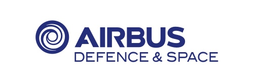

Airbus Defence and Space
Airbus Defence and Space is a division of Airbus SE focused on defense, security, and space solutions. The company employs around 18,000 people and operates in more than 90 countries, making it one of Europe's leading aerospace and defense organizations.
Overview
Airbus Defence and Space is involved in satellite manufacturing, space infrastructure, and provides comprehensive solutions for Earth observation, communications, and scientific missions. The company also contributes to launcher and satellite components.
Key Business Areas
- Space Systems: Satellite design, manufacturing, and integration
- Telecoms & Satcom: Communications satellite solutions
- Earth Observation: Advanced remote sensing systems
- Space Infrastructure: Components for Ariane rockets and ESA missions
Notable Projects
Airbus Defence and Space manufactures satellites for leading global operators and contributes to ESA missions. The company is also involved in developing next-generation satellite technologies and supporting European space initiatives.
Future Direction
The company is focused on digitalization, innovation in satellite technology, and supporting the European space industry's continued growth. Airbus Defence and Space plays a crucial role in maintaining European independence in space applications.